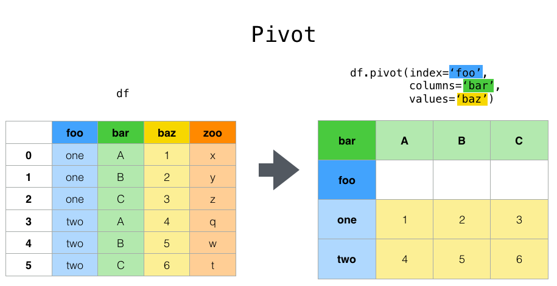

Reshaping and pivot tables#
Reshaping by pivoting DataFrame objects#
Data is often stored in so-called “stacked” or “record” format:
In [1]: import pandas._testing as tm
In [2]: def unpivot(frame):
...: N, K = frame.shape
...: data = {
...: "value": frame.to_numpy().ravel("F"),
...: "variable": np.asarray(frame.columns).repeat(N),
...: "date": np.tile(np.asarray(frame.index), K),
...: }
...: return pd.DataFrame(data, columns=["date", "variable", "value"])
...:
In [3]: df = unpivot(tm.makeTimeDataFrame(3))
In [4]: df
Out[4]:
date variable value
0 2000-01-03 A 0.469112
1 2000-01-04 A -0.282863
2 2000-01-05 A -1.509059
3 2000-01-03 B -1.135632
4 2000-01-04 B 1.212112
5 2000-01-05 B -0.173215
6 2000-01-03 C 0.119209
7 2000-01-04 C -1.044236
8 2000-01-05 C -0.861849
9 2000-01-03 D -2.104569
10 2000-01-04 D -0.494929
11 2000-01-05 D 1.071804
To select out everything for variable A we could do:
In [5]: filtered = df[df["variable"] == "A"]
In [6]: filtered
Out[6]:
date variable value
0 2000-01-03 A 0.469112
1 2000-01-04 A -0.282863
2 2000-01-05 A -1.509059
But suppose we wish to do time series operations with the variables. A better
representation would be where the columns are the unique variables and an
index of dates identifies individual observations. To reshape the data into
this form, we use the DataFrame.pivot() method (also implemented as a
top level function pivot()):
In [7]: pivoted = df.pivot(index="date", columns="variable", values="value")
In [8]: pivoted
Out[8]:
variable A B C D
date
2000-01-03 0.469112 -1.135632 0.119209 -2.104569
2000-01-04 -0.282863 1.212112 -1.044236 -0.494929
2000-01-05 -1.509059 -0.173215 -0.861849 1.071804
If the values argument is omitted, and the input DataFrame has more than
one column of values which are not used as column or index inputs to pivot(),
then the resulting “pivoted” DataFrame will have hierarchical columns whose topmost level indicates the respective value
column:
In [9]: df["value2"] = df["value"] * 2
In [10]: pivoted = df.pivot(index="date", columns="variable")
In [11]: pivoted
Out[11]:
value ... value2
variable A B C ... B C D
date ...
2000-01-03 0.469112 -1.135632 0.119209 ... -2.271265 0.238417 -4.209138
2000-01-04 -0.282863 1.212112 -1.044236 ... 2.424224 -2.088472 -0.989859
2000-01-05 -1.509059 -0.173215 -0.861849 ... -0.346429 -1.723698 2.143608
[3 rows x 8 columns]
You can then select subsets from the pivoted DataFrame:
In [12]: pivoted["value2"]
Out[12]:
variable A B C D
date
2000-01-03 0.938225 -2.271265 0.238417 -4.209138
2000-01-04 -0.565727 2.424224 -2.088472 -0.989859
2000-01-05 -3.018117 -0.346429 -1.723698 2.143608
Note that this returns a view on the underlying data in the case where the data are homogeneously-typed.
Note
pivot() will error with a ValueError: Index contains duplicate
entries, cannot reshape if the index/column pair is not unique. In this
case, consider using pivot_table() which is a generalization
of pivot that can handle duplicate values for one index/column pair.
Reshaping by stacking and unstacking#

Closely related to the pivot() method are the related
stack() and unstack() methods available on
Series and DataFrame. These methods are designed to work together with
MultiIndex objects (see the section on hierarchical indexing). Here are essentially what these methods do:
stack(): “pivot” a level of the (possibly hierarchical) column labels, returning aDataFramewith an index with a new inner-most level of row labels.unstack(): (inverse operation ofstack()) “pivot” a level of the (possibly hierarchical) row index to the column axis, producing a reshapedDataFramewith a new inner-most level of column labels.

The clearest way to explain is by example. Let’s take a prior example data set from the hierarchical indexing section:
In [13]: tuples = list(
....: zip(
....: *[
....: ["bar", "bar", "baz", "baz", "foo", "foo", "qux", "qux"],
....: ["one", "two", "one", "two", "one", "two", "one", "two"],
....: ]
....: )
....: )
....:
In [14]: index = pd.MultiIndex.from_tuples(tuples, names=["first", "second"])
In [15]: df = pd.DataFrame(np.random.randn(8, 2), index=index, columns=["A", "B"])
In [16]: df2 = df[:4]
In [17]: df2
Out[17]:
A B
first second
bar one 0.721555 -0.706771
two -1.039575 0.271860
baz one -0.424972 0.567020
two 0.276232 -1.087401
The stack() function “compresses” a level in the DataFrame columns to
produce either:
A
Series, in the case of a simple column Index.A
DataFrame, in the case of aMultiIndexin the columns.
If the columns have a MultiIndex, you can choose which level to stack. The
stacked level becomes the new lowest level in a MultiIndex on the columns:
In [18]: stacked = df2.stack()
In [19]: stacked
Out[19]:
first second
bar one A 0.721555
B -0.706771
two A -1.039575
B 0.271860
baz one A -0.424972
B 0.567020
two A 0.276232
B -1.087401
dtype: float64
With a “stacked” DataFrame or Series (having a MultiIndex as the
index), the inverse operation of stack() is unstack(), which by default
unstacks the last level:
In [20]: stacked.unstack()
Out[20]:
A B
first second
bar one 0.721555 -0.706771
two -1.039575 0.271860
baz one -0.424972 0.567020
two 0.276232 -1.087401
In [21]: stacked.unstack(1)
Out[21]:
second one two
first
bar A 0.721555 -1.039575
B -0.706771 0.271860
baz A -0.424972 0.276232
B 0.567020 -1.087401
In [22]: stacked.unstack(0)
Out[22]:
first bar baz
second
one A 0.721555 -0.424972
B -0.706771 0.567020
two A -1.039575 0.276232
B 0.271860 -1.087401

If the indexes have names, you can use the level names instead of specifying the level numbers:
In [23]: stacked.unstack("second")
Out[23]:
second one two
first
bar A 0.721555 -1.039575
B -0.706771 0.271860
baz A -0.424972 0.276232
B 0.567020 -1.087401

Notice that the stack() and unstack() methods implicitly sort the index
levels involved. Hence a call to stack() and then unstack(), or vice versa,
will result in a sorted copy of the original DataFrame or Series:
In [24]: index = pd.MultiIndex.from_product([[2, 1], ["a", "b"]])
In [25]: df = pd.DataFrame(np.random.randn(4), index=index, columns=["A"])
In [26]: df
Out[26]:
A
2 a -0.370647
b -1.157892
1 a -1.344312
b 0.844885
In [27]: all(df.unstack().stack() == df.sort_index())
Out[27]: True
The above code will raise a TypeError if the call to sort_index() is
removed.
Multiple levels#
You may also stack or unstack more than one level at a time by passing a list of levels, in which case the end result is as if each level in the list were processed individually.
In [28]: columns = pd.MultiIndex.from_tuples(
....: [
....: ("A", "cat", "long"),
....: ("B", "cat", "long"),
....: ("A", "dog", "short"),
....: ("B", "dog", "short"),
....: ],
....: names=["exp", "animal", "hair_length"],
....: )
....:
In [29]: df = pd.DataFrame(np.random.randn(4, 4), columns=columns)
In [30]: df
Out[30]:
exp A B A B
animal cat cat dog dog
hair_length long long short short
0 1.075770 -0.109050 1.643563 -1.469388
1 0.357021 -0.674600 -1.776904 -0.968914
2 -1.294524 0.413738 0.276662 -0.472035
3 -0.013960 -0.362543 -0.006154 -0.923061
In [31]: df.stack(level=["animal", "hair_length"])
Out[31]:
exp A B
animal hair_length
0 cat long 1.075770 -0.109050
dog short 1.643563 -1.469388
1 cat long 0.357021 -0.674600
dog short -1.776904 -0.968914
2 cat long -1.294524 0.413738
dog short 0.276662 -0.472035
3 cat long -0.013960 -0.362543
dog short -0.006154 -0.923061
The list of levels can contain either level names or level numbers (but not a mixture of the two).
# df.stack(level=['animal', 'hair_length'])
# from above is equivalent to:
In [32]: df.stack(level=[1, 2])
Out[32]:
exp A B
animal hair_length
0 cat long 1.075770 -0.109050
dog short 1.643563 -1.469388
1 cat long 0.357021 -0.674600
dog short -1.776904 -0.968914
2 cat long -1.294524 0.413738
dog short 0.276662 -0.472035
3 cat long -0.013960 -0.362543
dog short -0.006154 -0.923061
Missing data#
These functions are intelligent about handling missing data and do not expect
each subgroup within the hierarchical index to have the same set of labels.
They also can handle the index being unsorted (but you can make it sorted by
calling sort_index(), of course). Here is a more complex example:
In [33]: columns = pd.MultiIndex.from_tuples(
....: [
....: ("A", "cat"),
....: ("B", "dog"),
....: ("B", "cat"),
....: ("A", "dog"),
....: ],
....: names=["exp", "animal"],
....: )
....:
In [34]: index = pd.MultiIndex.from_product(
....: [("bar", "baz", "foo", "qux"), ("one", "two")], names=["first", "second"]
....: )
....:
In [35]: df = pd.DataFrame(np.random.randn(8, 4), index=index, columns=columns)
In [36]: df2 = df.iloc[[0, 1, 2, 4, 5, 7]]
In [37]: df2
Out[37]:
exp A B A
animal cat dog cat dog
first second
bar one 0.895717 0.805244 -1.206412 2.565646
two 1.431256 1.340309 -1.170299 -0.226169
baz one 0.410835 0.813850 0.132003 -0.827317
foo one -1.413681 1.607920 1.024180 0.569605
two 0.875906 -2.211372 0.974466 -2.006747
qux two -1.226825 0.769804 -1.281247 -0.727707
As mentioned above, stack() can be called with a level argument to select
which level in the columns to stack:
In [38]: df2.stack("exp")
Out[38]:
animal cat dog
first second exp
bar one A 0.895717 2.565646
B -1.206412 0.805244
two A 1.431256 -0.226169
B -1.170299 1.340309
baz one A 0.410835 -0.827317
B 0.132003 0.813850
foo one A -1.413681 0.569605
B 1.024180 1.607920
two A 0.875906 -2.006747
B 0.974466 -2.211372
qux two A -1.226825 -0.727707
B -1.281247 0.769804
In [39]: df2.stack("animal")
Out[39]:
exp A B
first second animal
bar one cat 0.895717 -1.206412
dog 2.565646 0.805244
two cat 1.431256 -1.170299
dog -0.226169 1.340309
baz one cat 0.410835 0.132003
dog -0.827317 0.813850
foo one cat -1.413681 1.024180
dog 0.569605 1.607920
two cat 0.875906 0.974466
dog -2.006747 -2.211372
qux two cat -1.226825 -1.281247
dog -0.727707 0.769804
Unstacking can result in missing values if subgroups do not have the same
set of labels. By default, missing values will be replaced with the default
fill value for that data type, NaN for float, NaT for datetimelike,
etc. For integer types, by default data will converted to float and missing
values will be set to NaN.
In [40]: df3 = df.iloc[[0, 1, 4, 7], [1, 2]]
In [41]: df3
Out[41]:
exp B
animal dog cat
first second
bar one 0.805244 -1.206412
two 1.340309 -1.170299
foo one 1.607920 1.024180
qux two 0.769804 -1.281247
In [42]: df3.unstack()
Out[42]:
exp B
animal dog cat
second one two one two
first
bar 0.805244 1.340309 -1.206412 -1.170299
foo 1.607920 NaN 1.024180 NaN
qux NaN 0.769804 NaN -1.281247
Alternatively, unstack takes an optional fill_value argument, for specifying
the value of missing data.
In [43]: df3.unstack(fill_value=-1e9)
Out[43]:
exp B
animal dog cat
second one two one two
first
bar 8.052440e-01 1.340309e+00 -1.206412e+00 -1.170299e+00
foo 1.607920e+00 -1.000000e+09 1.024180e+00 -1.000000e+09
qux -1.000000e+09 7.698036e-01 -1.000000e+09 -1.281247e+00
With a MultiIndex#
Unstacking when the columns are a MultiIndex is also careful about doing
the right thing:
In [44]: df[:3].unstack(0)
Out[44]:
exp A B ... A
animal cat dog ... cat dog
first bar baz bar ... baz bar baz
second ...
one 0.895717 0.410835 0.805244 ... 0.132003 2.565646 -0.827317
two 1.431256 NaN 1.340309 ... NaN -0.226169 NaN
[2 rows x 8 columns]
In [45]: df2.unstack(1)
Out[45]:
exp A B ... A
animal cat dog ... cat dog
second one two one ... two one two
first ...
bar 0.895717 1.431256 0.805244 ... -1.170299 2.565646 -0.226169
baz 0.410835 NaN 0.813850 ... NaN -0.827317 NaN
foo -1.413681 0.875906 1.607920 ... 0.974466 0.569605 -2.006747
qux NaN -1.226825 NaN ... -1.281247 NaN -0.727707
[4 rows x 8 columns]
Reshaping by melt#
The top-level melt() function and the corresponding DataFrame.melt()
are useful to massage a DataFrame into a format where one or more columns
are identifier variables, while all other columns, considered measured
variables, are “unpivoted” to the row axis, leaving just two non-identifier
columns, “variable” and “value”. The names of those columns can be customized
by supplying the var_name and value_name parameters.
For instance,
In [46]: cheese = pd.DataFrame(
....: {
....: "first": ["John", "Mary"],
....: "last": ["Doe", "Bo"],
....: "height": [5.5, 6.0],
....: "weight": [130, 150],
....: }
....: )
....:
In [47]: cheese
Out[47]:
first last height weight
0 John Doe 5.5 130
1 Mary Bo 6.0 150
In [48]: cheese.melt(id_vars=["first", "last"])
Out[48]:
first last variable value
0 John Doe height 5.5
1 Mary Bo height 6.0
2 John Doe weight 130.0
3 Mary Bo weight 150.0
In [49]: cheese.melt(id_vars=["first", "last"], var_name="quantity")
Out[49]:
first last quantity value
0 John Doe height 5.5
1 Mary Bo height 6.0
2 John Doe weight 130.0
3 Mary Bo weight 150.0
When transforming a DataFrame using melt(), the index will be ignored. The original index values can be kept around by setting the ignore_index parameter to False (default is True). This will however duplicate them.
New in version 1.1.0.
In [50]: index = pd.MultiIndex.from_tuples([("person", "A"), ("person", "B")])
In [51]: cheese = pd.DataFrame(
....: {
....: "first": ["John", "Mary"],
....: "last": ["Doe", "Bo"],
....: "height": [5.5, 6.0],
....: "weight": [130, 150],
....: },
....: index=index,
....: )
....:
In [52]: cheese
Out[52]:
first last height weight
person A John Doe 5.5 130
B Mary Bo 6.0 150
In [53]: cheese.melt(id_vars=["first", "last"])
Out[53]:
first last variable value
0 John Doe height 5.5
1 Mary Bo height 6.0
2 John Doe weight 130.0
3 Mary Bo weight 150.0
In [54]: cheese.melt(id_vars=["first", "last"], ignore_index=False)
Out[54]:
first last variable value
person A John Doe height 5.5
B Mary Bo height 6.0
A John Doe weight 130.0
B Mary Bo weight 150.0
Another way to transform is to use the wide_to_long() panel data
convenience function. It is less flexible than melt(), but more
user-friendly.
In [55]: dft = pd.DataFrame(
....: {
....: "A1970": {0: "a", 1: "b", 2: "c"},
....: "A1980": {0: "d", 1: "e", 2: "f"},
....: "B1970": {0: 2.5, 1: 1.2, 2: 0.7},
....: "B1980": {0: 3.2, 1: 1.3, 2: 0.1},
....: "X": dict(zip(range(3), np.random.randn(3))),
....: }
....: )
....:
In [56]: dft["id"] = dft.index
In [57]: dft
Out[57]:
A1970 A1980 B1970 B1980 X id
0 a d 2.5 3.2 -0.121306 0
1 b e 1.2 1.3 -0.097883 1
2 c f 0.7 0.1 0.695775 2
In [58]: pd.wide_to_long(dft, ["A", "B"], i="id", j="year")
Out[58]:
X A B
id year
0 1970 -0.121306 a 2.5
1 1970 -0.097883 b 1.2
2 1970 0.695775 c 0.7
0 1980 -0.121306 d 3.2
1 1980 -0.097883 e 1.3
2 1980 0.695775 f 0.1
Combining with stats and GroupBy#
It should be no shock that combining pivot() / stack() / unstack() with
GroupBy and the basic Series and DataFrame statistical functions can produce
some very expressive and fast data manipulations.
In [59]: df
Out[59]:
exp A B A
animal cat dog cat dog
first second
bar one 0.895717 0.805244 -1.206412 2.565646
two 1.431256 1.340309 -1.170299 -0.226169
baz one 0.410835 0.813850 0.132003 -0.827317
two -0.076467 -1.187678 1.130127 -1.436737
foo one -1.413681 1.607920 1.024180 0.569605
two 0.875906 -2.211372 0.974466 -2.006747
qux one -0.410001 -0.078638 0.545952 -1.219217
two -1.226825 0.769804 -1.281247 -0.727707
In [60]: df.stack().mean(1).unstack()
Out[60]:
animal cat dog
first second
bar one -0.155347 1.685445
two 0.130479 0.557070
baz one 0.271419 -0.006733
two 0.526830 -1.312207
foo one -0.194750 1.088763
two 0.925186 -2.109060
qux one 0.067976 -0.648927
two -1.254036 0.021048
# same result, another way
In [61]: df.groupby(level=1, axis=1).mean()
Out[61]:
animal cat dog
first second
bar one -0.155347 1.685445
two 0.130479 0.557070
baz one 0.271419 -0.006733
two 0.526830 -1.312207
foo one -0.194750 1.088763
two 0.925186 -2.109060
qux one 0.067976 -0.648927
two -1.254036 0.021048
In [62]: df.stack().groupby(level=1).mean()
Out[62]:
exp A B
second
one 0.071448 0.455513
two -0.424186 -0.204486
In [63]: df.mean().unstack(0)
Out[63]:
exp A B
animal
cat 0.060843 0.018596
dog -0.413580 0.232430
Pivot tables#
While pivot() provides general purpose pivoting with various
data types (strings, numerics, etc.), pandas also provides pivot_table()
for pivoting with aggregation of numeric data.
The function pivot_table() can be used to create spreadsheet-style
pivot tables. See the cookbook for some advanced
strategies.
It takes a number of arguments:
data: a DataFrame object.values: a column or a list of columns to aggregate.index: a column, Grouper, array which has the same length as data, or list of them. Keys to group by on the pivot table index. If an array is passed, it is being used as the same manner as column values.columns: a column, Grouper, array which has the same length as data, or list of them. Keys to group by on the pivot table column. If an array is passed, it is being used as the same manner as column values.aggfunc: function to use for aggregation, defaulting tonumpy.mean.
Consider a data set like this:
In [64]: import datetime
In [65]: df = pd.DataFrame(
....: {
....: "A": ["one", "one", "two", "three"] * 6,
....: "B": ["A", "B", "C"] * 8,
....: "C": ["foo", "foo", "foo", "bar", "bar", "bar"] * 4,
....: "D": np.random.randn(24),
....: "E": np.random.randn(24),
....: "F": [datetime.datetime(2013, i, 1) for i in range(1, 13)]
....: + [datetime.datetime(2013, i, 15) for i in range(1, 13)],
....: }
....: )
....:
In [66]: df
Out[66]:
A B C D E F
0 one A foo 0.341734 -0.317441 2013-01-01
1 one B foo 0.959726 -1.236269 2013-02-01
2 two C foo -1.110336 0.896171 2013-03-01
3 three A bar -0.619976 -0.487602 2013-04-01
4 one B bar 0.149748 -0.082240 2013-05-01
.. ... .. ... ... ... ...
19 three B foo 0.690579 -2.213588 2013-08-15
20 one C foo 0.995761 1.063327 2013-09-15
21 one A bar 2.396780 1.266143 2013-10-15
22 two B bar 0.014871 0.299368 2013-11-15
23 three C bar 3.357427 -0.863838 2013-12-15
[24 rows x 6 columns]
We can produce pivot tables from this data very easily:
In [67]: pd.pivot_table(df, values="D", index=["A", "B"], columns=["C"])
Out[67]:
C bar foo
A B
one A 1.120915 -0.514058
B -0.338421 0.002759
C -0.538846 0.699535
three A -1.181568 NaN
B NaN 0.433512
C 0.588783 NaN
two A NaN 1.000985
B 0.158248 NaN
C NaN 0.176180
In [68]: pd.pivot_table(df, values="D", index=["B"], columns=["A", "C"], aggfunc=np.sum)
Out[68]:
A one three two
C bar foo bar foo bar foo
B
A 2.241830 -1.028115 -2.363137 NaN NaN 2.001971
B -0.676843 0.005518 NaN 0.867024 0.316495 NaN
C -1.077692 1.399070 1.177566 NaN NaN 0.352360
In [69]: pd.pivot_table(
....: df, values=["D", "E"],
....: index=["B"],
....: columns=["A", "C"],
....: aggfunc=np.sum,
....: )
....:
Out[69]:
D ... E
A one three ... three two
C bar foo bar ... foo bar foo
B ...
A 2.241830 -1.028115 -2.363137 ... NaN NaN 0.128491
B -0.676843 0.005518 NaN ... -2.128743 -0.194294 NaN
C -1.077692 1.399070 1.177566 ... NaN NaN 0.872482
[3 rows x 12 columns]
The result object is a DataFrame having potentially hierarchical indexes on the
rows and columns. If the values column name is not given, the pivot table
will include all of the data in an additional level of hierarchy in the columns:
In [70]: pd.pivot_table(df[["A", "B", "C", "D", "E"]], index=["A", "B"], columns=["C"])
Out[70]:
D E
C bar foo bar foo
A B
one A 1.120915 -0.514058 1.393057 -0.021605
B -0.338421 0.002759 0.684140 -0.551692
C -0.538846 0.699535 -0.988442 0.747859
three A -1.181568 NaN 0.961289 NaN
B NaN 0.433512 NaN -1.064372
C 0.588783 NaN -0.131830 NaN
two A NaN 1.000985 NaN 0.064245
B 0.158248 NaN -0.097147 NaN
C NaN 0.176180 NaN 0.436241
Also, you can use Grouper for index and columns keywords. For detail of Grouper, see Grouping with a Grouper specification.
In [71]: pd.pivot_table(df, values="D", index=pd.Grouper(freq="M", key="F"), columns="C")
Out[71]:
C bar foo
F
2013-01-31 NaN -0.514058
2013-02-28 NaN 0.002759
2013-03-31 NaN 0.176180
2013-04-30 -1.181568 NaN
2013-05-31 -0.338421 NaN
2013-06-30 -0.538846 NaN
2013-07-31 NaN 1.000985
2013-08-31 NaN 0.433512
2013-09-30 NaN 0.699535
2013-10-31 1.120915 NaN
2013-11-30 0.158248 NaN
2013-12-31 0.588783 NaN
You can render a nice output of the table omitting the missing values by
calling to_string() if you wish:
In [72]: table = pd.pivot_table(df, index=["A", "B"], columns=["C"], values=["D", "E"])
In [73]: print(table.to_string(na_rep=""))
D E
C bar foo bar foo
A B
one A 1.120915 -0.514058 1.393057 -0.021605
B -0.338421 0.002759 0.684140 -0.551692
C -0.538846 0.699535 -0.988442 0.747859
three A -1.181568 0.961289
B 0.433512 -1.064372
C 0.588783 -0.131830
two A 1.000985 0.064245
B 0.158248 -0.097147
C 0.176180 0.436241
- Note that
pivot_table()is also available as an instance method on DataFrame, i.e.
DataFrame.pivot_table().
Adding margins#
If you pass margins=True to pivot_table(), special All columns and
rows will be added with partial group aggregates across the categories on the
rows and columns:
In [74]: table = df.pivot_table(
....: index=["A", "B"],
....: columns="C",
....: values=["D", "E"],
....: margins=True,
....: aggfunc=np.std
....: )
....:
In [75]: table
Out[75]:
D E
C bar foo All bar foo All
A B
one A 1.804346 1.210272 1.569879 0.179483 0.418374 0.858005
B 0.690376 1.353355 0.898998 1.083825 0.968138 1.101401
C 0.273641 0.418926 0.771139 1.689271 0.446140 1.422136
three A 0.794212 NaN 0.794212 2.049040 NaN 2.049040
B NaN 0.363548 0.363548 NaN 1.625237 1.625237
C 3.915454 NaN 3.915454 1.035215 NaN 1.035215
two A NaN 0.442998 0.442998 NaN 0.447104 0.447104
B 0.202765 NaN 0.202765 0.560757 NaN 0.560757
C NaN 1.819408 1.819408 NaN 0.650439 0.650439
All 1.556686 0.952552 1.246608 1.250924 0.899904 1.059389
Additionally, you can call DataFrame.stack() to display a pivoted DataFrame
as having a multi-level index:
In [76]: table.stack()
Out[76]:
D E
A B C
one A All 1.569879 0.858005
bar 1.804346 0.179483
foo 1.210272 0.418374
B All 0.898998 1.101401
bar 0.690376 1.083825
... ... ...
two C All 1.819408 0.650439
foo 1.819408 0.650439
All All 1.246608 1.059389
bar 1.556686 1.250924
foo 0.952552 0.899904
[24 rows x 2 columns]
Cross tabulations#
Use crosstab() to compute a cross-tabulation of two (or more)
factors. By default crosstab() computes a frequency table of the factors
unless an array of values and an aggregation function are passed.
It takes a number of arguments
index: array-like, values to group by in the rows.columns: array-like, values to group by in the columns.values: array-like, optional, array of values to aggregate according to the factors.aggfunc: function, optional, If no values array is passed, computes a frequency table.rownames: sequence, defaultNone, must match number of row arrays passed.colnames: sequence, defaultNone, if passed, must match number of column arrays passed.margins: boolean, defaultFalse, Add row/column margins (subtotals)normalize: boolean, {‘all’, ‘index’, ‘columns’}, or {0,1}, defaultFalse. Normalize by dividing all values by the sum of values.
Any Series passed will have their name attributes used unless row or column
names for the cross-tabulation are specified
For example:
In [77]: foo, bar, dull, shiny, one, two = "foo", "bar", "dull", "shiny", "one", "two"
In [78]: a = np.array([foo, foo, bar, bar, foo, foo], dtype=object)
In [79]: b = np.array([one, one, two, one, two, one], dtype=object)
In [80]: c = np.array([dull, dull, shiny, dull, dull, shiny], dtype=object)
In [81]: pd.crosstab(a, [b, c], rownames=["a"], colnames=["b", "c"])
Out[81]:
b one two
c dull shiny dull shiny
a
bar 1 0 0 1
foo 2 1 1 0
If crosstab() receives only two Series, it will provide a frequency table.
In [82]: df = pd.DataFrame(
....: {"A": [1, 2, 2, 2, 2], "B": [3, 3, 4, 4, 4], "C": [1, 1, np.nan, 1, 1]}
....: )
....:
In [83]: df
Out[83]:
A B C
0 1 3 1.0
1 2 3 1.0
2 2 4 NaN
3 2 4 1.0
4 2 4 1.0
In [84]: pd.crosstab(df["A"], df["B"])
Out[84]:
B 3 4
A
1 1 0
2 1 3
crosstab() can also be implemented
to Categorical data.
In [85]: foo = pd.Categorical(["a", "b"], categories=["a", "b", "c"])
In [86]: bar = pd.Categorical(["d", "e"], categories=["d", "e", "f"])
In [87]: pd.crosstab(foo, bar)
Out[87]:
col_0 d e
row_0
a 1 0
b 0 1
If you want to include all of data categories even if the actual data does
not contain any instances of a particular category, you should set dropna=False.
For example:
In [88]: pd.crosstab(foo, bar, dropna=False)
Out[88]:
col_0 d e f
row_0
a 1 0 0
b 0 1 0
c 0 0 0
Normalization#
Frequency tables can also be normalized to show percentages rather than counts
using the normalize argument:
In [89]: pd.crosstab(df["A"], df["B"], normalize=True)
Out[89]:
B 3 4
A
1 0.2 0.0
2 0.2 0.6
normalize can also normalize values within each row or within each column:
In [90]: pd.crosstab(df["A"], df["B"], normalize="columns")
Out[90]:
B 3 4
A
1 0.5 0.0
2 0.5 1.0
crosstab() can also be passed a third Series and an aggregation function
(aggfunc) that will be applied to the values of the third Series within
each group defined by the first two Series:
In [91]: pd.crosstab(df["A"], df["B"], values=df["C"], aggfunc=np.sum)
Out[91]:
B 3 4
A
1 1.0 NaN
2 1.0 2.0
Adding margins#
Finally, one can also add margins or normalize this output.
In [92]: pd.crosstab(
....: df["A"], df["B"], values=df["C"], aggfunc=np.sum, normalize=True, margins=True
....: )
....:
Out[92]:
B 3 4 All
A
1 0.25 0.0 0.25
2 0.25 0.5 0.75
All 0.50 0.5 1.00
Tiling#
The cut() function computes groupings for the values of the input
array and is often used to transform continuous variables to discrete or
categorical variables:
In [93]: ages = np.array([10, 15, 13, 12, 23, 25, 28, 59, 60])
In [94]: pd.cut(ages, bins=3)
Out[94]:
[(9.95, 26.667], (9.95, 26.667], (9.95, 26.667], (9.95, 26.667], (9.95, 26.667], (9.95, 26.667], (26.667, 43.333], (43.333, 60.0], (43.333, 60.0]]
Categories (3, interval[float64, right]): [(9.95, 26.667] < (26.667, 43.333] < (43.333, 60.0]]
If the bins keyword is an integer, then equal-width bins are formed.
Alternatively we can specify custom bin-edges:
In [95]: c = pd.cut(ages, bins=[0, 18, 35, 70])
In [96]: c
Out[96]:
[(0, 18], (0, 18], (0, 18], (0, 18], (18, 35], (18, 35], (18, 35], (35, 70], (35, 70]]
Categories (3, interval[int64, right]): [(0, 18] < (18, 35] < (35, 70]]
If the bins keyword is an IntervalIndex, then these will be
used to bin the passed data.:
pd.cut([25, 20, 50], bins=c.categories)
Computing indicator / dummy variables#
To convert a categorical variable into a “dummy” or “indicator” DataFrame,
for example a column in a DataFrame (a Series) which has k distinct
values, can derive a DataFrame containing k columns of 1s and 0s using
get_dummies():
In [97]: df = pd.DataFrame({"key": list("bbacab"), "data1": range(6)})
In [98]: pd.get_dummies(df["key"])
Out[98]:
a b c
0 0 1 0
1 0 1 0
2 1 0 0
3 0 0 1
4 1 0 0
5 0 1 0
Sometimes it’s useful to prefix the column names, for example when merging the result
with the original DataFrame:
In [99]: dummies = pd.get_dummies(df["key"], prefix="key")
In [100]: dummies
Out[100]:
key_a key_b key_c
0 0 1 0
1 0 1 0
2 1 0 0
3 0 0 1
4 1 0 0
5 0 1 0
In [101]: df[["data1"]].join(dummies)
Out[101]:
data1 key_a key_b key_c
0 0 0 1 0
1 1 0 1 0
2 2 1 0 0
3 3 0 0 1
4 4 1 0 0
5 5 0 1 0
This function is often used along with discretization functions like cut():
In [102]: values = np.random.randn(10)
In [103]: values
Out[103]:
array([ 0.4082, -1.0481, -0.0257, -0.9884, 0.0941, 1.2627, 1.29 ,
0.0824, -0.0558, 0.5366])
In [104]: bins = [0, 0.2, 0.4, 0.6, 0.8, 1]
In [105]: pd.get_dummies(pd.cut(values, bins))
Out[105]:
(0.0, 0.2] (0.2, 0.4] (0.4, 0.6] (0.6, 0.8] (0.8, 1.0]
0 0 0 1 0 0
1 0 0 0 0 0
2 0 0 0 0 0
3 0 0 0 0 0
4 1 0 0 0 0
5 0 0 0 0 0
6 0 0 0 0 0
7 1 0 0 0 0
8 0 0 0 0 0
9 0 0 1 0 0
See also Series.str.get_dummies.
get_dummies() also accepts a DataFrame. By default all categorical
variables (categorical in the statistical sense, those with object or
categorical dtype) are encoded as dummy variables.
In [106]: df = pd.DataFrame({"A": ["a", "b", "a"], "B": ["c", "c", "b"], "C": [1, 2, 3]})
In [107]: pd.get_dummies(df)
Out[107]:
C A_a A_b B_b B_c
0 1 1 0 0 1
1 2 0 1 0 1
2 3 1 0 1 0
All non-object columns are included untouched in the output. You can control
the columns that are encoded with the columns keyword.
In [108]: pd.get_dummies(df, columns=["A"])
Out[108]:
B C A_a A_b
0 c 1 1 0
1 c 2 0 1
2 b 3 1 0
Notice that the B column is still included in the output, it just hasn’t
been encoded. You can drop B before calling get_dummies if you don’t
want to include it in the output.
As with the Series version, you can pass values for the prefix and
prefix_sep. By default the column name is used as the prefix, and _ as
the prefix separator. You can specify prefix and prefix_sep in 3 ways:
string: Use the same value for
prefixorprefix_sepfor each column to be encoded.list: Must be the same length as the number of columns being encoded.
dict: Mapping column name to prefix.
In [109]: simple = pd.get_dummies(df, prefix="new_prefix")
In [110]: simple
Out[110]:
C new_prefix_a new_prefix_b new_prefix_b new_prefix_c
0 1 1 0 0 1
1 2 0 1 0 1
2 3 1 0 1 0
In [111]: from_list = pd.get_dummies(df, prefix=["from_A", "from_B"])
In [112]: from_list
Out[112]:
C from_A_a from_A_b from_B_b from_B_c
0 1 1 0 0 1
1 2 0 1 0 1
2 3 1 0 1 0
In [113]: from_dict = pd.get_dummies(df, prefix={"B": "from_B", "A": "from_A"})
In [114]: from_dict
Out[114]:
C from_A_a from_A_b from_B_b from_B_c
0 1 1 0 0 1
1 2 0 1 0 1
2 3 1 0 1 0
Sometimes it will be useful to only keep k-1 levels of a categorical
variable to avoid collinearity when feeding the result to statistical models.
You can switch to this mode by turn on drop_first.
In [115]: s = pd.Series(list("abcaa"))
In [116]: pd.get_dummies(s)
Out[116]:
a b c
0 1 0 0
1 0 1 0
2 0 0 1
3 1 0 0
4 1 0 0
In [117]: pd.get_dummies(s, drop_first=True)
Out[117]:
b c
0 0 0
1 1 0
2 0 1
3 0 0
4 0 0
When a column contains only one level, it will be omitted in the result.
In [118]: df = pd.DataFrame({"A": list("aaaaa"), "B": list("ababc")})
In [119]: pd.get_dummies(df)
Out[119]:
A_a B_a B_b B_c
0 1 1 0 0
1 1 0 1 0
2 1 1 0 0
3 1 0 1 0
4 1 0 0 1
In [120]: pd.get_dummies(df, drop_first=True)
Out[120]:
B_b B_c
0 0 0
1 1 0
2 0 0
3 1 0
4 0 1
By default new columns will have np.uint8 dtype.
To choose another dtype, use the dtype argument:
In [121]: df = pd.DataFrame({"A": list("abc"), "B": [1.1, 2.2, 3.3]})
In [122]: pd.get_dummies(df, dtype=bool).dtypes
Out[122]:
B float64
A_a bool
A_b bool
A_c bool
dtype: object
New in version 1.5.0.
To convert a “dummy” or “indicator” DataFrame, into a categorical DataFrame,
for example k columns of a DataFrame containing 1s and 0s can derive a
DataFrame which has k distinct values using
from_dummies():
In [123]: df = pd.DataFrame({"prefix_a": [0, 1, 0], "prefix_b": [1, 0, 1]})
In [124]: df
Out[124]:
prefix_a prefix_b
0 0 1
1 1 0
2 0 1
In [125]: pd.from_dummies(df, sep="_")
Out[125]:
prefix
0 b
1 a
2 b
Dummy coded data only requires k - 1 categories to be included, in this case
the k th category is the default category, implied by not being assigned any of
the other k - 1 categories, can be passed via default_category.
In [126]: df = pd.DataFrame({"prefix_a": [0, 1, 0]})
In [127]: df
Out[127]:
prefix_a
0 0
1 1
2 0
In [128]: pd.from_dummies(df, sep="_", default_category="b")
Out[128]:
prefix
0 b
1 a
2 b
Factorizing values#
To encode 1-d values as an enumerated type use factorize():
In [129]: x = pd.Series(["A", "A", np.nan, "B", 3.14, np.inf])
In [130]: x
Out[130]:
0 A
1 A
2 NaN
3 B
4 3.14
5 inf
dtype: object
In [131]: labels, uniques = pd.factorize(x)
In [132]: labels
Out[132]: array([ 0, 0, -1, 1, 2, 3])
In [133]: uniques
Out[133]: Index(['A', 'B', 3.14, inf], dtype='object')
Note that factorize() is similar to numpy.unique, but differs in its
handling of NaN:
Note
The following numpy.unique will fail under Python 3 with a TypeError
because of an ordering bug. See also
here.
In [134]: ser = pd.Series(['A', 'A', np.nan, 'B', 3.14, np.inf])
In [135]: pd.factorize(ser, sort=True)
Out[135]: (array([ 2, 2, -1, 3, 0, 1]), Index([3.14, inf, 'A', 'B'], dtype='object'))
In [136]: np.unique(ser, return_inverse=True)[::-1]
---------------------------------------------------------------------------
TypeError Traceback (most recent call last)
Cell In [136], line 1
----> 1 np.unique(ser, return_inverse=True)[::-1]
File <__array_function__ internals>:180, in unique(*args, **kwargs)
File ~/micromamba/envs/test/lib/python3.8/site-packages/numpy/lib/arraysetops.py:274, in unique(ar, return_index, return_inverse, return_counts, axis, equal_nan)
272 ar = np.asanyarray(ar)
273 if axis is None:
--> 274 ret = _unique1d(ar, return_index, return_inverse, return_counts,
275 equal_nan=equal_nan)
276 return _unpack_tuple(ret)
278 # axis was specified and not None
File ~/micromamba/envs/test/lib/python3.8/site-packages/numpy/lib/arraysetops.py:333, in _unique1d(ar, return_index, return_inverse, return_counts, equal_nan)
330 optional_indices = return_index or return_inverse
332 if optional_indices:
--> 333 perm = ar.argsort(kind='mergesort' if return_index else 'quicksort')
334 aux = ar[perm]
335 else:
TypeError: '<' not supported between instances of 'float' and 'str'
Note
If you just want to handle one column as a categorical variable (like R’s factor),
you can use df["cat_col"] = pd.Categorical(df["col"]) or
df["cat_col"] = df["col"].astype("category"). For full docs on Categorical,
see the Categorical introduction and the
API documentation.
Examples#
In this section, we will review frequently asked questions and examples. The column names and relevant column values are named to correspond with how this DataFrame will be pivoted in the answers below.
In [137]: np.random.seed([3, 1415])
In [138]: n = 20
In [139]: cols = np.array(["key", "row", "item", "col"])
In [140]: df = cols + pd.DataFrame(
.....: (np.random.randint(5, size=(n, 4)) // [2, 1, 2, 1]).astype(str)
.....: )
.....:
In [141]: df.columns = cols
In [142]: df = df.join(pd.DataFrame(np.random.rand(n, 2).round(2)).add_prefix("val"))
In [143]: df
Out[143]:
key row item col val0 val1
0 key0 row3 item1 col3 0.81 0.04
1 key1 row2 item1 col2 0.44 0.07
2 key1 row0 item1 col0 0.77 0.01
3 key0 row4 item0 col2 0.15 0.59
4 key1 row0 item2 col1 0.81 0.64
.. ... ... ... ... ... ...
15 key0 row3 item1 col1 0.31 0.23
16 key0 row0 item2 col3 0.86 0.01
17 key0 row4 item0 col3 0.64 0.21
18 key2 row2 item2 col0 0.13 0.45
19 key0 row2 item0 col4 0.37 0.70
[20 rows x 6 columns]
Pivoting with single aggregations#
Suppose we wanted to pivot df such that the col values are columns,
row values are the index, and the mean of val0 are the values? In
particular, the resulting DataFrame should look like:
col col0 col1 col2 col3 col4
row
row0 0.77 0.605 NaN 0.860 0.65
row2 0.13 NaN 0.395 0.500 0.25
row3 NaN 0.310 NaN 0.545 NaN
row4 NaN 0.100 0.395 0.760 0.24
This solution uses pivot_table(). Also note that
aggfunc='mean' is the default. It is included here to be explicit.
In [144]: df.pivot_table(values="val0", index="row", columns="col", aggfunc="mean")
Out[144]:
col col0 col1 col2 col3 col4
row
row0 0.77 0.605 NaN 0.860 0.65
row2 0.13 NaN 0.395 0.500 0.25
row3 NaN 0.310 NaN 0.545 NaN
row4 NaN 0.100 0.395 0.760 0.24
Note that we can also replace the missing values by using the fill_value
parameter.
In [145]: df.pivot_table(
.....: values="val0",
.....: index="row",
.....: columns="col",
.....: aggfunc="mean",
.....: fill_value=0,
.....: )
.....:
Out[145]:
col col0 col1 col2 col3 col4
row
row0 0.77 0.605 0.000 0.860 0.65
row2 0.13 0.000 0.395 0.500 0.25
row3 0.00 0.310 0.000 0.545 0.00
row4 0.00 0.100 0.395 0.760 0.24
Also note that we can pass in other aggregation functions as well. For example,
we can also pass in sum.
In [146]: df.pivot_table(
.....: values="val0",
.....: index="row",
.....: columns="col",
.....: aggfunc="sum",
.....: fill_value=0,
.....: )
.....:
Out[146]:
col col0 col1 col2 col3 col4
row
row0 0.77 1.21 0.00 0.86 0.65
row2 0.13 0.00 0.79 0.50 0.50
row3 0.00 0.31 0.00 1.09 0.00
row4 0.00 0.10 0.79 1.52 0.24
Another aggregation we can do is calculate the frequency in which the columns
and rows occur together a.k.a. “cross tabulation”. To do this, we can pass
size to the aggfunc parameter.
In [147]: df.pivot_table(index="row", columns="col", fill_value=0, aggfunc="size")
Out[147]:
col col0 col1 col2 col3 col4
row
row0 1 2 0 1 1
row2 1 0 2 1 2
row3 0 1 0 2 0
row4 0 1 2 2 1
Pivoting with multiple aggregations#
We can also perform multiple aggregations. For example, to perform both a
sum and mean, we can pass in a list to the aggfunc argument.
In [148]: df.pivot_table(
.....: values="val0",
.....: index="row",
.....: columns="col",
.....: aggfunc=["mean", "sum"],
.....: )
.....:
Out[148]:
mean sum
col col0 col1 col2 col3 col4 col0 col1 col2 col3 col4
row
row0 0.77 0.605 NaN 0.860 0.65 0.77 1.21 NaN 0.86 0.65
row2 0.13 NaN 0.395 0.500 0.25 0.13 NaN 0.79 0.50 0.50
row3 NaN 0.310 NaN 0.545 NaN NaN 0.31 NaN 1.09 NaN
row4 NaN 0.100 0.395 0.760 0.24 NaN 0.10 0.79 1.52 0.24
Note to aggregate over multiple value columns, we can pass in a list to the
values parameter.
In [149]: df.pivot_table(
.....: values=["val0", "val1"],
.....: index="row",
.....: columns="col",
.....: aggfunc=["mean"],
.....: )
.....:
Out[149]:
mean
val0 val1
col col0 col1 col2 col3 col4 col0 col1 col2 col3 col4
row
row0 0.77 0.605 NaN 0.860 0.65 0.01 0.745 NaN 0.010 0.02
row2 0.13 NaN 0.395 0.500 0.25 0.45 NaN 0.34 0.440 0.79
row3 NaN 0.310 NaN 0.545 NaN NaN 0.230 NaN 0.075 NaN
row4 NaN 0.100 0.395 0.760 0.24 NaN 0.070 0.42 0.300 0.46
Note to subdivide over multiple columns we can pass in a list to the
columns parameter.
In [150]: df.pivot_table(
.....: values=["val0"],
.....: index="row",
.....: columns=["item", "col"],
.....: aggfunc=["mean"],
.....: )
.....:
Out[150]:
mean
val0
item item0 item1 item2
col col2 col3 col4 col0 col1 col2 col3 col4 col0 col1 col3 col4
row
row0 NaN NaN NaN 0.77 NaN NaN NaN NaN NaN 0.605 0.86 0.65
row2 0.35 NaN 0.37 NaN NaN 0.44 NaN NaN 0.13 NaN 0.50 0.13
row3 NaN NaN NaN NaN 0.31 NaN 0.81 NaN NaN NaN 0.28 NaN
row4 0.15 0.64 NaN NaN 0.10 0.64 0.88 0.24 NaN NaN NaN NaN
Exploding a list-like column#
New in version 0.25.0.
Sometimes the values in a column are list-like.
In [151]: keys = ["panda1", "panda2", "panda3"]
In [152]: values = [["eats", "shoots"], ["shoots", "leaves"], ["eats", "leaves"]]
In [153]: df = pd.DataFrame({"keys": keys, "values": values})
In [154]: df
Out[154]:
keys values
0 panda1 [eats, shoots]
1 panda2 [shoots, leaves]
2 panda3 [eats, leaves]
We can ‘explode’ the values column, transforming each list-like to a separate row, by using explode(). This will replicate the index values from the original row:
In [155]: df["values"].explode()
Out[155]:
0 eats
0 shoots
1 shoots
1 leaves
2 eats
2 leaves
Name: values, dtype: object
You can also explode the column in the DataFrame.
In [156]: df.explode("values")
Out[156]:
keys values
0 panda1 eats
0 panda1 shoots
1 panda2 shoots
1 panda2 leaves
2 panda3 eats
2 panda3 leaves
Series.explode() will replace empty lists with np.nan and preserve scalar entries. The dtype of the resulting Series is always object.
In [157]: s = pd.Series([[1, 2, 3], "foo", [], ["a", "b"]])
In [158]: s
Out[158]:
0 [1, 2, 3]
1 foo
2 []
3 [a, b]
dtype: object
In [159]: s.explode()
Out[159]:
0 1
0 2
0 3
1 foo
2 NaN
3 a
3 b
dtype: object
Here is a typical usecase. You have comma separated strings in a column and want to expand this.
In [160]: df = pd.DataFrame([{"var1": "a,b,c", "var2": 1}, {"var1": "d,e,f", "var2": 2}])
In [161]: df
Out[161]:
var1 var2
0 a,b,c 1
1 d,e,f 2
Creating a long form DataFrame is now straightforward using explode and chained operations
In [162]: df.assign(var1=df.var1.str.split(",")).explode("var1")
Out[162]:
var1 var2
0 a 1
0 b 1
0 c 1
1 d 2
1 e 2
1 f 2